星星峽
每天早上的序幕大多都是從叫醒旅館的人開始，當他們還在呼呼大睡的時候，我已經牽著小多，著裝完畢準備要出發了。
雖然我總比旅館的值班人員要早起，但比我更早起的人則多不勝數，柳原一大早的街上已經有掃完地的清潔工，正在焚燒垃圾休息。

辛苦的礦工們一大早就已經忙碌的在上工，或者他們根本就是二十四小時輪班沒的休息的。
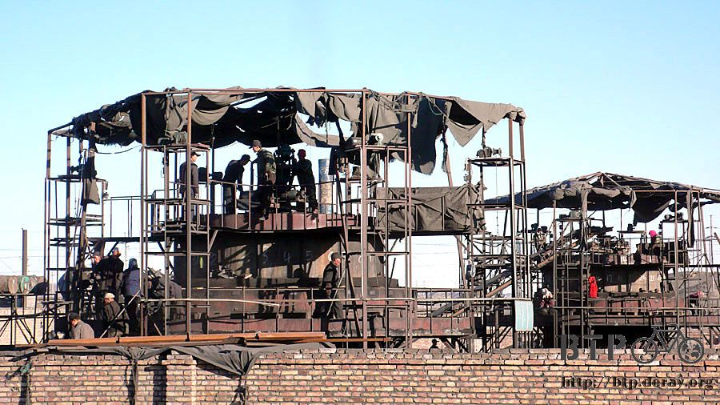
在沒找到早餐店的情況下，我就進入了柳園往星星峽的312國道。
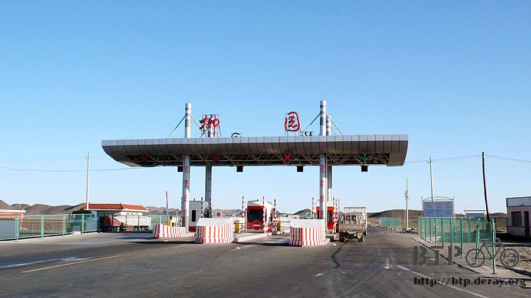
既然不能在早餐店坐下來悠閒的吃頓早餐，那就來吃自製的『單車早餐』吧。
翻著行李包，拿出一包餅乾、一包牛奶，再配上幾把葡萄乾，這樣就算打發掉早餐了。
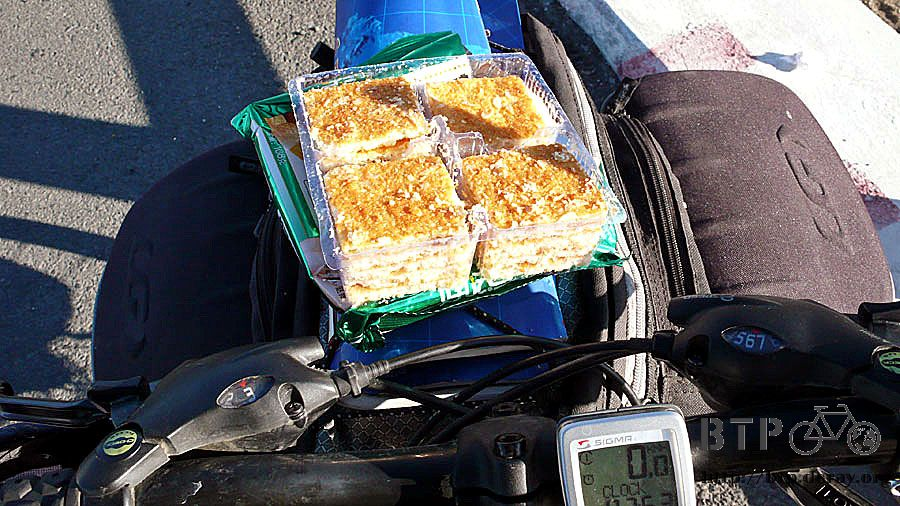
往星星峽這一路上，也是沒有人煙的荒漠，將近九十公里的路也不可能中午前就騎到，所以中午吃的依然是『單車午餐』。
同樣的一包餅乾、一包牛奶，幾把葡萄乾，這樣的菜色雖不能吃飽，但看看四周的荒涼景象，有東西吃已經算很不錯了。
早上的氣溫宜人、微風徐徐，得把握這一早的時機多騎一點路，因為一到下午，風勢會瞬間增強好幾倍，連平路都快騎不動了。
騎在甘肅往新疆的路上，都是上坡然後接著下坡的路，沒什麼很明顯的爬高地形，一路上不斷的翻越山嶺的缺口，
越來越進入荒涼的領地，滿車的食物和飲水，就是帶給我信心的最佳籌碼，人煙罕至又怎麼樣，我的儲糧可以開一間小雜貨店了。
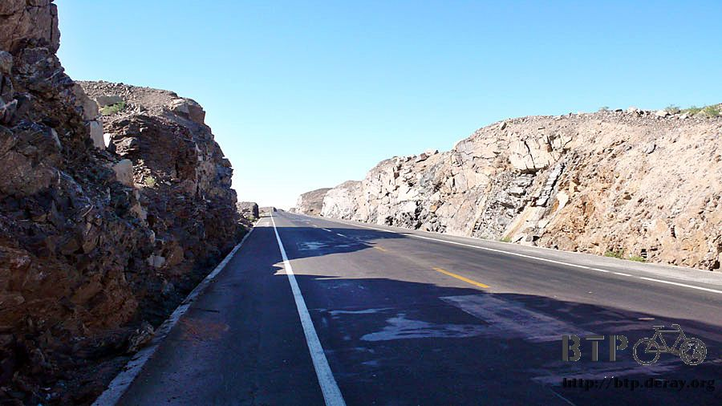
騎著騎著，同一條312國道又被我騎到『三鐵支』，已經忘了二鐵支的時候我人在哪裡的路上，但接下來要走的路還長的很～
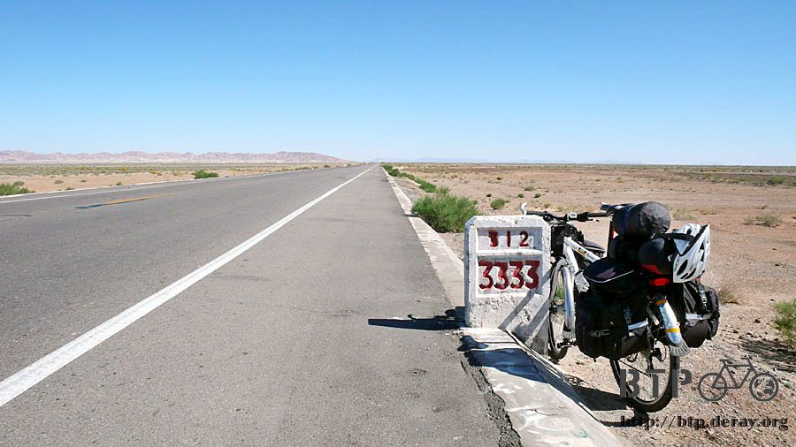
出發後五個小時，翻越了數不盡的小山嶺，沙漠的面貌也一直在改變，從土黃色的變成白色，然後又變成紅色。
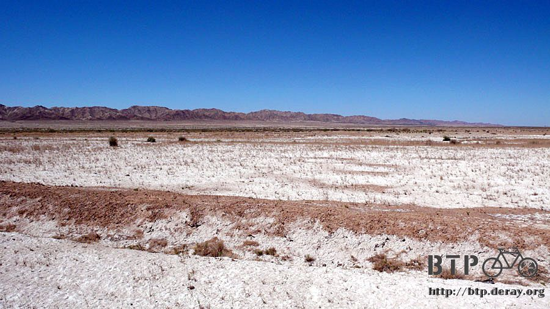
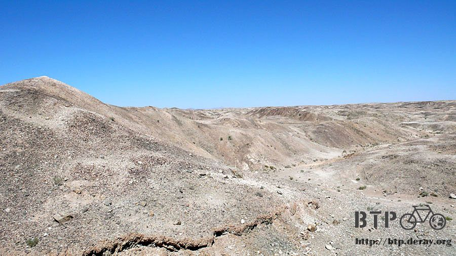
可能都沒有好好停下來休息的緣故，有點提不起勁騎車，不知道還要翻越多少個山頭，才會進入新疆？
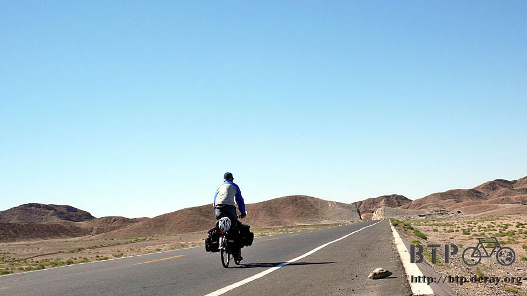
這個大叔是我第一個遇到的烏魯木齊人，他從烏魯木齊騎車去拉薩玩，現在要回家去了。
他看到我的第一句話是『你也要回家去嗎？』，我的家已經離這裡好幾千公里遠了，我正遠離著家的方向在旅行呢。
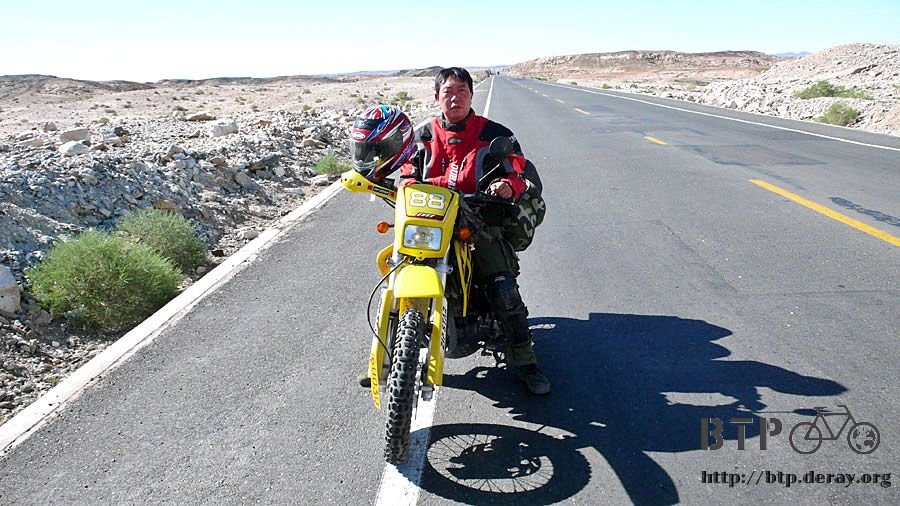
快要打瞌睡昏倒在路邊之際，看到路旁有幾個用黑色圍布搭建起來的小店，靠近一看原來是賣西瓜的。
在這麼偏僻的地方賣西瓜？主要客人就是往來穿梭的卡車司機們，我的光臨只是一種偶然。
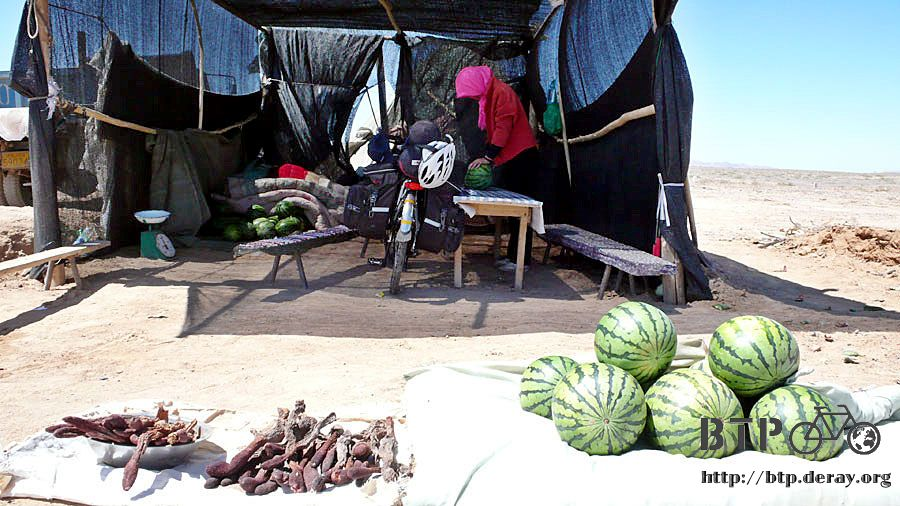
西瓜都是自家在安西栽種然後運到這邊，西瓜收成之後就是農閒狀態，所以就到這裡來賣西瓜，一賣就是一整個夏天。
一輛卡車載著西瓜和行囊過來，正面是店面，後頭則是睡覺用的帳篷。
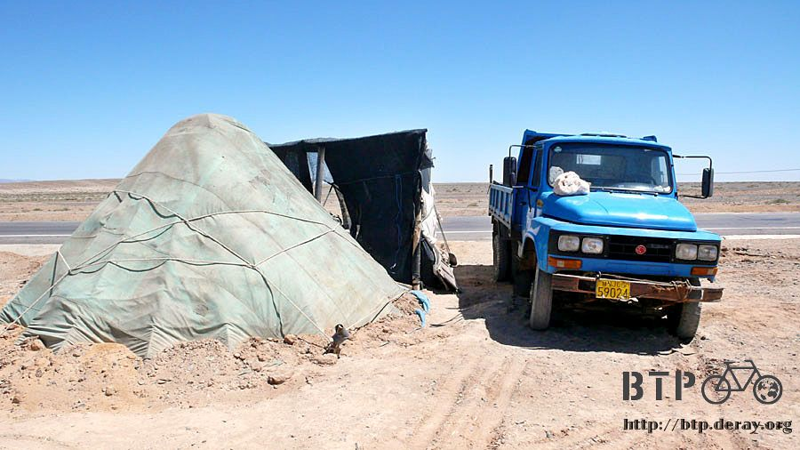
請老闆幫我挑一顆我吃的完的份量，一大顆西瓜重達十斤，我吃水餃只需要半斤就可以吃飽，西瓜可以吃的下十斤嗎~_~
反正現在中午嘛，就當吃午餐，慢慢吃兼休息，總會吃完的。
其他吃西瓜的客人看到門口那個咖啡色的草，都會問那是什麼？
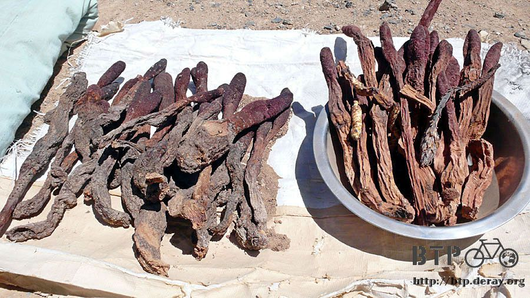
因為我也好奇的問過，所以我已經可以幫忙回答。
『那是鎖陽，又稱為沙漠人參，是壯陽補腎的，泡在酒裡喝。』
這一家賣西瓜的是由媽媽跟二女兒來顧攤子，其他人繼續在安西耕種，家裡除了西瓜之外，也種白蘭瓜和棉花。
這個西瓜若有說有什麼特色的話，那就是籽超多的，又多又大粒，根本就是多籽西瓜，但甜甜的還不錯吃。
吃西瓜的時候就跟媽媽還有隔壁攤跑過來裝開水的阿姨一起聊天，他們關心我的旅行計畫，
我關心的是他們在這邊擺攤，要吃些什麼東西果腹呀？該不會整個夏天就吃西瓜吧。
照片由右而左依序是：二女兒、媽媽和隔壁攤的阿姨。
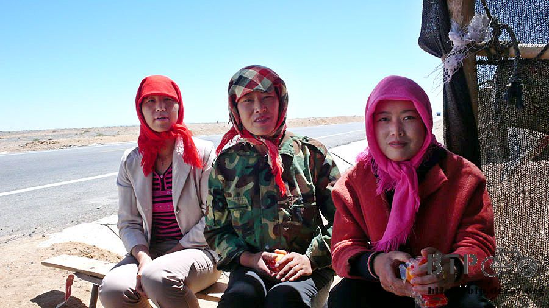
吃完半顆西瓜先休息一下喘口氣，整個很撐，去沙漠裡面走一走蒸發一下體內的水氣，回來繼續把剩下的半顆西瓜也吃完。
外頭都是豔陽高照，難得這邊有個小棚子可以讓我乘涼擋太陽，吃完西瓜之後就理所當然的留在這邊休息。
我翻了翻行李，拿出橘子來分大家一起吃，一人發一顆橘子，結果後來退回來兩顆給我，
他們怕吃光我的食物，我路上會餓肚子，所以三個人合吃一顆橘子。
聊天聊得很開心，媽媽很想送我一顆西瓜，讓我掛在車上帶著走，我說這實在沒有辦法帶著一顆西瓜騎車，好意心領。
結果媽媽就送給我一個比頭還大的大餅，本來就很乾的餅，這個更是曬乾過的，摸起來像是粗糙的紙板，吃起來像是堅硬的沙漠。
試著啃了兩口，這個跟背包裡那一個萬年儲糧，磚頭燒餅，可以當成好朋友，都是超硬派的食物。
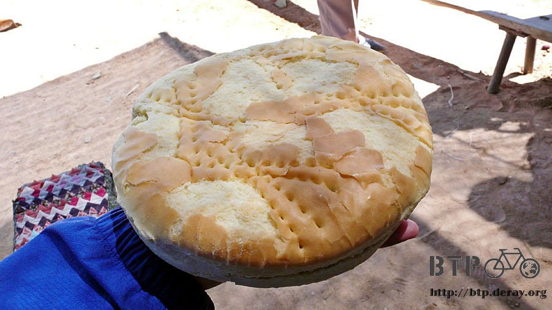
我想要付一點錢買這個大餅，但是想也知道，媽媽不願意收，說是送給我的，怕我路上肚子餓。
我說之前曾經過一百多公里都沒有人煙的地方之後，我就決定行李中隨時都要有足夠的糧食，所以不怕餓肚子。
說完就翻著行李，拿出了一包蛋捲，一人再發一小包當點心吃，這次總算沒有又退回給我了。
閒話家常的聊著，時間也慢慢逼近下午兩點，這時候離目的地星星峽只剩下短短的二十幾公里，所以一點都不趕路。
下午之後，大風四起，風沙滿天飛舞，黑布小店好像要被捲到空中去似的，更加證明了下午風勢會增強的這個想法。
看到風勢增強，好像是在跟我說該上路了，別蹉跎太久，將大餅塞到行李中的時候，刻意將半包的蛋捲遺留在桌上，就當交換禮物吧。
同樣的一段路，早上跟下午真是天壤之別，告別了西瓜小店之後，繼續騎在未完的路上。
之前明明是輕鬆的平路，吃完西瓜後，路沒有變，但是風勢變大了，一樣的路騎起來像是陡坡峭壁那樣艱辛。
當成練習，之後還有很多段都是強逆風的路，現在不適應的話，到時候該怎麼辦呢？
路上跑去沙漠裡拍幾張照片，這個是紅土的沙漠，遠遠看的時候很漂亮，像是燃燒的大地，很有遠古時代的氣氛。
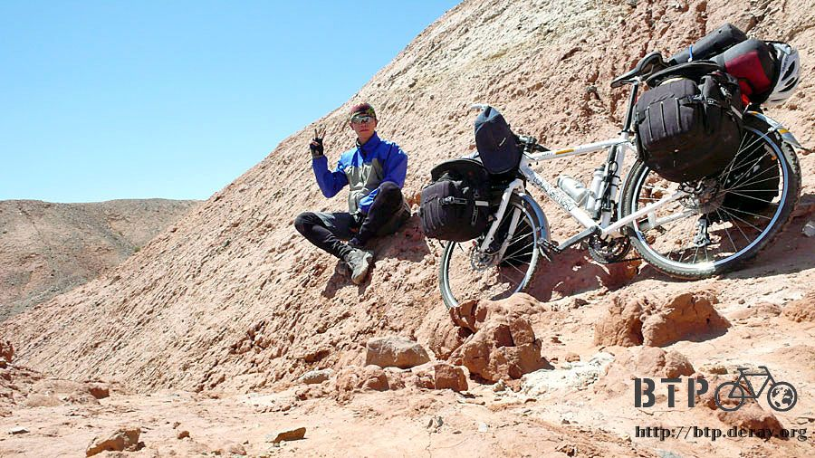
從離開西瓜小店開始，就是上坡路段，爬到頂端即是星星峽，咬著牙一點一點的往上騎，
心裡想著的是明天的路，星星峽往哈密有兩百公里，路上也是人煙罕至，只有一個駱駝圈子可以吃喝，
其它就通通都是戈壁灘的範圍，要我沒的吃也沒的住，明天可能要有露營的心理準備，或是要艱苦的一天騎上兩百公里。
半路上在路邊看到一個人，戴著草帽躺在一堆行李當中，一開始以為是乞丐，
但是他居然在看地圖，而且還是中國地圖，所以應該是旅行者，想要搭便車去城市吧，那悠哉的樣子還蠻令人會心一笑的。
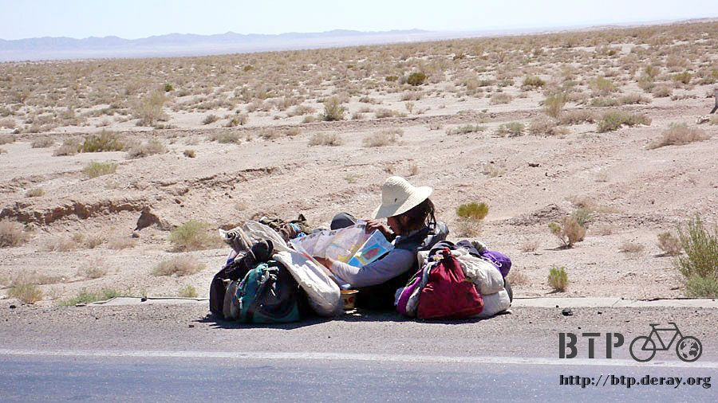
離星星峽還有兩公里的時候又再度出現了牌子，但是除了中文還加上了不知名的文字，
另一種文字的星星峽，看起來就是沙漠中開了兩朵花。
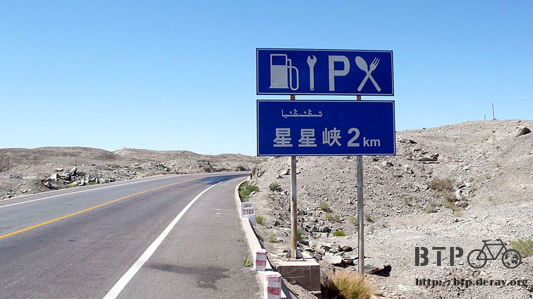
這是我第一次看到指引往烏魯木齊的牌子，從北京出發時距離至少有好幾千公里，騎了一個多月的單車之後，距離新疆的首都，
終於只剩下短短的七百多公里路，快則一個星期，慢則十天就可以抵達，這同時也代表，中國的旅行已經快要結束了。
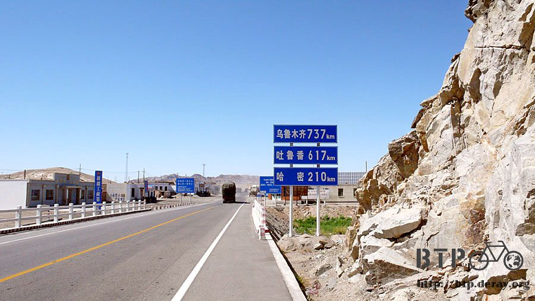
下午四點多，輕鬆的抵達星星峽，名字這麼美的地方，這小鎮倒是不怎麼美麗。
因為是前後都一百多公里沒有人煙的中繼補充點，所以停滿了休息和吃飯的卡車。
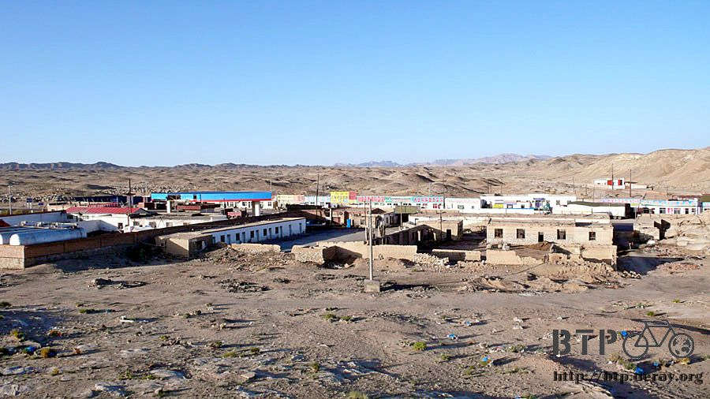
店家也清一色全都是餐廳、卡車修理、商店和旅館以及三間加油站，並不是什麼美麗的風景名勝觀光地。
今天住在星星峽的星星旅館，名字很好聽所以就住下來，房間很寬敞，一床十塊錢的便宜價位。
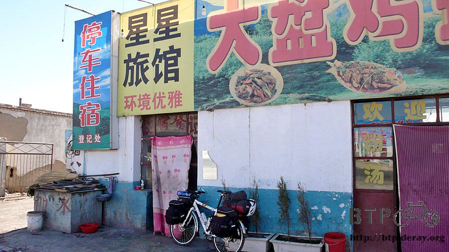
房間裡面還附有煤炭跟暖爐，冬天很冷的時候可以自己燒炭取暖。
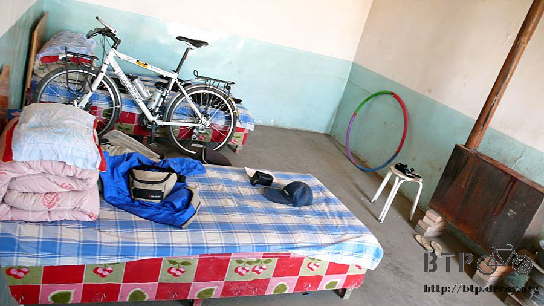
沒有水龍頭的城鎮，去水缸舀了一盆水擦擦臉、搓搓身體，感覺真是無比的暢快。
晚餐就吃旅館隔壁的餐廳，點了一碗羊肉湯、白菜肉配著花捲吃，這裡連電視訊號也沒有，
餐廳裡就播放了卡拉OK的VCD，聽著奇怪的歌吃下今天第一次正餐，終於不是在單車上解決了。
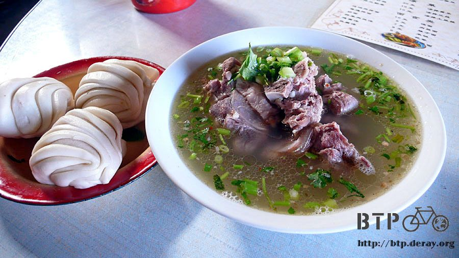
旅館的內院很寬廣，晚上這裡是沒有光害的地方，既然名叫星星峽，半夜不跑出來看一下滿天星斗有點可惜。
晚上九點天還沒黑就早早的入睡，半夜三點從溫暖的被窩中爬起來，拍幾張星空的照片，真的是滿天星星峽。
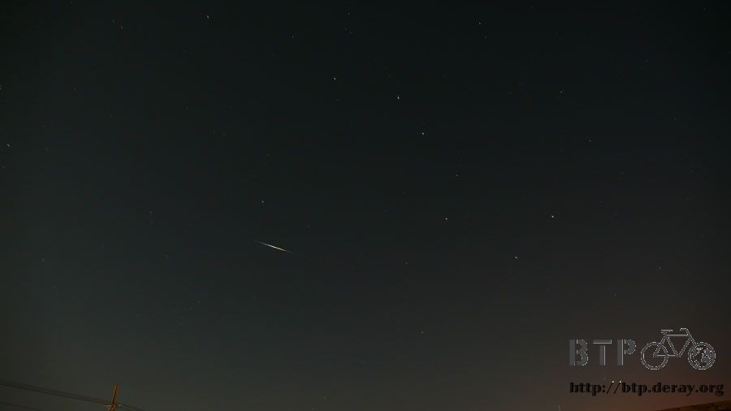
碰巧拍到流星和很清楚的北斗七星杓子圖案，發著抖站在星空下感受星空那既寧靜又熱鬧的氛圍。
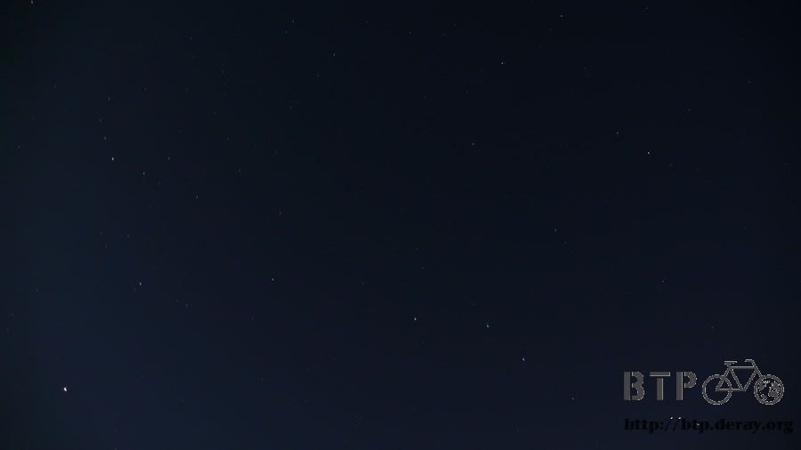
繼續閱讀：6.1 找碴的小蜜蜂
中國-人民幣－ 1：4.3 台幣
5.31 |
總計：47元 |
西瓜十斤15元、晚餐羊肉湯9元、白菜肉12元、花捲1元、住店10元 |
|